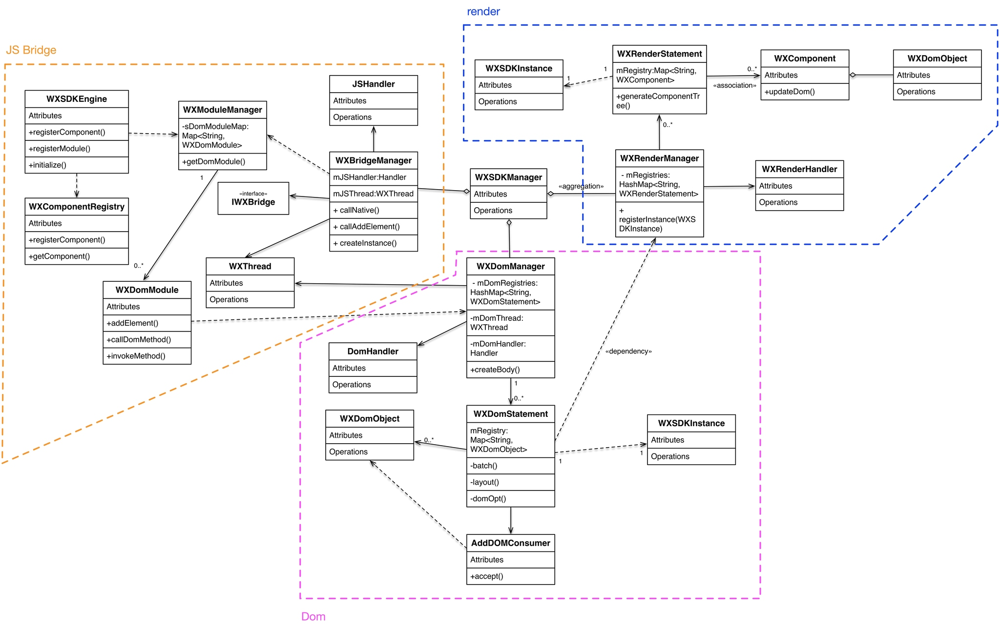

Weex 源码简读
茄子
2018-11-23
使用指南
Weex 扩展(Android)
Module
Module 用于扩展非 UI 功能
- extends WXModule
- @JsMethod(uiThread = false or true)
- public function
- -keep public class * extends com.taobao.weex.common.WXModule{*;}
- 方法参数:int,double,float,String,Map,List
- Register: WXSDKEngine.registerModule("myModule", MyModule.class);
- 自定义一个 Module
public class MyModule extends WXModule { //run ui thread @JSMethod (uiThread = true) public void printLog(String msg) { Toast.makeText(mWXSDKInstance.getContext(),msg,Toast.LENGTH_SHORT).show(); } //run JS thread @JSMethod (uiThread = false) public void fireEventSyncCall(){ //implement your module logic here } } - 注册一个 Module
WXSDKEngine.registerModule("MyModule", MyModule.class); - 在 Weex 页面中调用 Module
testMyModule
Component
Component 扩展实现 Native 控件
- extends WXComponent
- @WXComponentProp(name=value(value is attr or style of dsl))
- -keep public class * extends com.taobao.weex.common.WXComponent{*;}
- 方法参数:int,double,float,String,Map,List
- WXSDKEngine.registerComponent("richText", RichText.class);
- 自定义一个 Component
public class RichText extends WXComponent{ public RichText(WXSDKInstance instance, WXDomObject dom, WXVContainer parent) { super(instance, dom, parent); } @Override protected TextView initComponentHostView(@NonNull Context context) { TextView textView = new TextView(context); textView.setTextSize(20); textView.setTextColor(Color.BLACK); return textView; } @WXComponentProp(name = "tel") public void setTel(String telNumber) { getHostView().setText("tel: " + telNumber); } } - 注册 Component
WXSDKEngine.registerComponent("richText", RichText.class); - 在 Weex 页面中使用 Component
12305
Adapter
- IWXImgLoaderAdapter
- IWXHttpAdapter
- IWXUserTrackAdapter
- IActivityNavBarSetter
- IWXStorageAdapter
以 IWXJSExceptionAdapter 图片加载适配器为例,使用方法如下:
public class ImageAdapter implements IWXImgLoaderAdapter {
public ImageAdapter() {
}
@Override
public void setImage(final String url, final ImageView view, WXImageQuality quality, WXImageStrategy strategy) {
WXSDKManager.getInstance().postOnUiThread(new Runnable() {
@Override
public void run() {
if(view==null||view.getLayoutParams()==null){
return;
}
if (TextUtils.isEmpty(url)) {
view.setImageBitmap(null);
return;
}
String temp = url;
if (url.startsWith("//")) {
temp = "http:" + url;
}
if (view.getLayoutParams().width <= 0 || view.getLayoutParams().height <= 0) {
return;
}
Picasso.with(WXEnvironment.getApplication())
.load(temp)
.into(view);
}
},0);
}
}
Lifecycle
Weex 页面生命周期控制
在调用 WXSDKInstance => reloadPage() 方法时，会进到 refreshInstance 流程中，具体调用流程如图：
当点击 Weex 页面的按钮触发点击事件时，会进入 fireEvent 流程，具体调用流程如图：
WXSDKInstance => onActivityDestroy() 当 Weex 页面伴随着所在 Activity 的生命周期方法结束时，会进入 destoryInstance 的流程，具体调用流程如图：
组件生命周期解析
- 初始化内部变量,添加事件功能
- 没有执行数据绑定,没有创建 Virtual-DOM,所以不能通过 this 获取到 data 中的数据,不能调用到 methods 中定义的方法,也不能获取到 Virtual-DOM 的节点
- 可以在方法内初始化一些内部变量,绑定一些自定义事件
- 刚完成数据绑定,还没开始编译模板
- 可以通过 this 操作 data 中的数据,可以调用 methods 中的方法,但是不能获取到 Virtual-DOM 的节点
- 可以在方法中修改 data 中数据,不会触发额外的渲染
- 表示组件已经渲染完成
- 首先执行子组件的 ready 方法
- 可以获得 Virtual-DOM 的节点,也可以获取子组件的 Virtual-DOM 实例
- 小心操作 data,避免频繁赋值
- 建议去除需要频繁改动的值,等操作执行结束之后再赋值
避免频繁赋值:
// 在修改 this.count 前先获取它的值，在执行完操作后再赋值回去，如果在循环体中直接设置 this.count 的值，页面将触发 999 次局部刷新，很可能会导致页面卡顿
module.exports = {
data: {
count: 0
},
ready: function () {
var count = this.count;
for (var i = 0; i < 999; i++) {
count += Math.random();
}
this.count = count;
}
}
- 组件销毁时被调用
- 自底向上执行(先触发子组件的 destroyed 方法,再触发自身的)
- 先执行开发者定义的 destroyed 方法,再清除内部属性
- 添加的全局或者 this 的属性,建议在 destroyed 方法中手动清除,避免内存泄露
架构分析
项目目录结构
选择性列了一些比较重要的目录:
./incubator-weex # 根目录
-----------------------------------------------------------------------------------------
- android/ # Android SDK 相关目录
- commons/ #
- playground/ # Android 模板工程
- sdk/ # Android Weex SDK
-----------------------------------------------------------------------------------------
- ios/ # iOS SDK 相关
- playground/ # iOS 模板工程
- sdk/ # iOS Weex SDK
-----------------------------------------------------------------------------------------
- packages/ # 打包好的 JSFramework 库
- weex-js-framework/ #
- weex-js-runtime/ #
- weex-legacy-framework/ #
- weex-vanilla-framework/ #
-----------------------------------------------------------------------------------------
- runtime/ # JSFramework 源码目录
- api/ #
- bridge/ #
- entries/ #
- frameworks/ #
- services/ #
- shared/ #
- vdom/ #
-----------------------------------------------------------------------------------------
- script/ # 一些脚本文件
-----------------------------------------------------------------------------------------
- weex_core/Source # Weex 底层支持代码(打包成 weexcore.so,SDK 引入)
- IPC/ # [Android] IPC 通信层
- android/ # [Android] JNI 层
- base/ #
- core/ #
- include/ #
- third_party/ #
- wson/ # wson 支持
- CMakeLists.txt # CMake 打包脚本
框架结构图

调用流程图

进程模型
Android SDK
初始化流程分析
整个初始化的流程,简单来说就是:
- 获取 Application 对象
- 读取初始化的 Config 参数
- 配置 so 的加载方式，然后加载 weexcore.so 库
- 加载打包在本地的 JSFramework 组件，调用 native 的方法初始化 JS 环境
- 注册所有内置的 Weex Component 组件和 Module 组件
WXSDKEngine -> initialize()
Weex 官方文档中的初始化方法：
public class WXApplication extends Application {
@Override
public void onCreate() {
super.onCreate();
InitConfig config=new InitConfig.Builder().setImgAdapter(new ImageAdapter()).build();
WXSDKEngine.initialize(this,config);
}
}
此处调用了 WXSDKEngine 方法，那么这个方法里面做了什么事情呢，我们来看下：
// com.taobao.weex.WXSDKEngine
public static void initialize(Application application,InitConfig config){
synchronized (mLock) {
if (mIsInit) {
return;
}
// 此处省略，大概就是记录初始化耗时，设置日志级别什么的
doInitInternal(application,config);
registerApplicationOptions(application);
mIsInit = true;
}
}
这里需要重点关注的就是 doInitInternal 和 registerApplicationOptions 这两个方法。
WXSDKEngine -> doInitInternal()
其实主要初始化的工作都是由 doInitInternal 这个方法完成的，我们来看下它的代码：
private static void doInitInternal(final Application application,final InitConfig config){
// 获取 Application 对象
WXEnvironment.sApplication = application;
// 如果 Application 对象为空，传递异常给到 JS
if(application == null){
WXLogUtils.e(TAG, " doInitInternal application is null");
WXExceptionUtils.commitCriticalExceptionRT(null,
WXErrorCode.WX_KEY_EXCEPTION_SDK_INIT,
"doInitInternal",
WXErrorCode.WX_KEY_EXCEPTION_SDK_INIT.getErrorMsg() + "WXEnvironment sApplication is null",
null);
}
WXEnvironment.JsFrameworkInit = false;
// 这里的操作在线程中完成
WXBridgeManager.getInstance().post(new Runnable() {
@Override
public void run() {
// 又要统计初始化时间什么的，忽略
WXSDKManager sm = WXSDKManager.getInstance();
sm.onSDKEngineInitialize();
// 设置 Weex 初始化的 Congif 参数(可以为空)
if(config != null ) {
sm.setInitConfig(config);
}
// 初始化 SoLoaderAdapter 默认直接调用 System.loadLibrary(so...)
WXSoInstallMgrSdk.init(application,
sm.getIWXSoLoaderAdapter(),
sm.getWXStatisticsListener());
// 加载 V8 so 库，一个叫 weexcore.so 的库
mIsSoInit = WXSoInstallMgrSdk.initSo(V8_SO_NAME, 1, config!=null?config.getUtAdapter():null);
if (!mIsSoInit) {
WXExceptionUtils.commitCriticalExceptionRT(null,
WXErrorCode.WX_KEY_EXCEPTION_SDK_INIT,
"doInitInternal",
WXErrorCode.WX_KEY_EXCEPTION_SDK_INIT.getErrorMsg() + "isSoInit false",
null);
return;
}
// 调用 WXBridgeManager 的 initScriptsFramework 方法，一系列调用最终调用到了 WXBridgeManager 的 initFramework 方法，我们后续再看
sm.initScriptsFramework(config!=null?config.getFramework():null);
}
});
// 注册了一堆默认的 Component
register();
}
可以看到其中几步重要的操作通过 Wxbridgemanager.Getinstance().post() 在线程中完成:
WXBridgeManager.getInstance().post(new Runnable() {
@Override
public void run() {
// do something
}
};
其中有两个重要的方法,继续往下追 initFramework 方法和 register 方法,分两小节来介绍.
WXSoInstallMgrSdk => initSo()
加载打包在 APK 内的所有 so 文件
- libJavaScriptCore.so
- libweexcore.so
- libweexjsb.so
- libweexjss.so
- libweexjst.so
WXSDKEngine => doInitInternal() 方法中调用了 WXSoInstallMgrSdk => initSo() 方法:
// V8_SO_NAME = "weexcore.so"
WXSoInstallMgrSdk.initSo(V8_SO_NAME, 1, config!=null?config.getUtAdapter():null);
WXSoInstallMgrSdk => initSo() 方法内部实现:
/**
* Load so library.
*
* If a library loader adapter exists, use this adapter to load library,
* otherwise use {@link System#loadLibrary(String)} to load library.
* If failed to load library, try to extract the so library and load it
* from arembi in the .apk
*
* @param libName library name, like webp, not necessary to be libwep.so
* @param version the version of the so library
*/
public static boolean initSo(String libName, int version, IWXUserTrackAdapter utAdapter) {
// other code...
// copy startup so
copyStartUpSo();
// other code...
if (mSoLoader != null) {
mSoLoader.doLoadLibrary(libName);
} else {
System.loadLibrary(libName);
}
// other code...
}
WXSDKEngine => regiser()
初始化 Framework 层之后， WXSDKEngine 调用了 register() 方法注册了一系列内置的 Component 和 Module
内嵌的 Component 组件
| Component | Class |
|-------------------+-------------------------------|
| text | WXText.class |
| image | WXImage.class |
| img | WXImage.class |
| div | WXDiv.class |
| container | WXDiv.class |
| header | WXDiv.class |
| footer | WXDiv.class |
| scroller | WXScroller.class |
| slider | WXSlider.class |
| cycleslider | WXSlider.class |
| slider-neighbor | WXSliderNeighbor.class |
| cell | WXCell.class |
| list | WXListComponent.class |
| vlist | WXListComponent.class |
| recycler | WXListComponent.class |
| waterfall | WXListComponent.class |
| simplelist | SimpleListComponent.class |
| recycler-list | WXRecyclerTemplateList.class |
| hlist | HorizontalListComponent.class |
| cell-slot | WXCell.class |
| indicator | WXIndicator.class |
| video | WXVideo.class |
| input | WXInput.class |
| textarea | WXTextarea.class |
| switch | WXSwitch.class |
| a | WXA.class |
| embed | WXEmbed.class |
| web | WXWeb.class |
| refresh | WXRefresh.class |
| loading | WXLoading.class |
| loading-indicator | WXLoadingIndicator.class |
| header | WXHeader.class |
内嵌的 Module 组件
| Module | Class |
|--------------+---------------------------|
| modal | WXModalUIModule.class |
| instanceWrap | WXInstanceWrap.class |
| animation | WXAnimationModule.class |
| webview | WXWebViewModule.class |
| navigator | WXNavigatorModule.class |
| stream | WXStreamModule.class |
| timer | WXTimerModule.class |
| storage | WXStorageModule.class |
| clipboard | WXClipboardModule.class |
| globalEvent | WXGlobalEventModule.class |
| picker | WXPickersModule.class |
| meta | WXMetaModule.class |
| webSocket | WebSocketModule.class |
| locale | WXLocaleModule.class |
WXSDKEngine -> registerApplicationOptions()
可以认为是获取了 App 的一些环境配置
| key | value |
|----------------------+--------------------------------------------|
| screen_width_pixels | resources.getDisplayMetricx().widthPixels |
| screen_height_pixels | resources.getDisplayMetricx().heightPixels |
| status_bar_height | get status bar height |
获取 statusbarheight 的方式：
// com.taobao.weex.WXSDKEngine
int resourceId = resources.getIdentifier("status_bar_height", "dimen", "android");
if (resourceId > 0) {
int statusBarHeight = resources.getDimensionPixelSize(resourceId);
registerCoreEnv("status_bar_height", String.valueOf(statusBarHeight));
}
Weex 页面渲染流程分析
public class MainActivity extends AppCompatActivity implements IWXRenderListener {
WXSDKInstance mWXSDKInstance;
@Override
protected void onCreate(Bundle savedInstanceState) {
super.onCreate(savedInstanceState);
setContentView(R.layout.activity_main);
mWXSDKInstance = new WXSDKInstance(this);
mWXSDKInstance.registerRenderListener(this);
/**
* WXSample 可以替换成自定义的字符串，针对埋点有效。
* template 是.we transform 后的 js 文件。
* option 可以为空，或者通过 option 传入 js 需要的参数。例如 bundle js 的地址等。
* jsonInitData 可以为空。
* width 为-1 默认全屏，可以自己定制。
* height =-1 默认全屏，可以自己定制。
*/
mWXSDKInstance.render("WXSample", WXFileUtils.loadFileOrAsset("hello.js", this), null, null, -1, -1, WXRenderStrategy.APPEND_ASYNC);
}
/* other methods */
}
来分析下 WXSDKInstance -> render() 方法的内部实现, 除了参数检查之外,它其实调用的是内部的 rednerInternal 方法.
WXSDKInstance => renderInternal()
redner 方法内部调用了内部的 renderInternal 方法来进行 Weex 页面的渲染，来看下代码：
/**
* Render template asynchronously
*
* @param pageName, used for performance log.
* @param template bundle js
* @param options os iphone/android/ipad
* weexversion Weex version(like 1.0.0)
* appversion App version(like 1.0.0)
* devid Device id(like Aqh9z8dRJNBhmS9drLG5BKCmXhecHUXIZoXOctKwFebH)
* sysversion Device system version(like 5.4.4、7.0.4, should be used with os)
* sysmodel Device model(like iOS:"MGA82J/A", android:"MI NOTE LTE")
* Time UNIX timestamp, UTC+08:00
* TTID(Optional)
* MarkertId
* Appname(Optional) tm,tb,qa
* Bundleurl(Optional) template url
* @param jsonInitData Initial data for rendering
* @param flag RenderStrategy {@link WXRenderStrategy}
*/
private void renderInternal(String pageName,
String template,
Map options,
String jsonInitData,
WXRenderStrategy flag){
// 此处省略各种参数检查
// 此处省略数据埋点
// 检查 RenderContainer 是否为空，为空的话创建一个
ensureRenderArchor();
Map renderOptions = options;
if (renderOptions == null) {
renderOptions = new HashMap<>();
}
if (WXEnvironment.sDynamicMode && !TextUtils.isEmpty(WXEnvironment.sDynamicUrl) && renderOptions.get("dynamicMode") == null) {
renderOptions.put("dynamicMode", "true");
// 根据 URL 渲染，最终还是调用到 renderInternal 方法，最终还是会调用 WXSDKManager -> createInstance 方法
renderByUrl(pageName, WXEnvironment.sDynamicUrl, renderOptions, jsonInitData, flag);
return;
}
WXSDKManager.getInstance().setCrashInfo(WXEnvironment.WEEX_CURRENT_KEY,pageName);
// 渲染页面，会调用 WXBridgeManager -> createInstance 方法
WXSDKManager.getInstance().createInstance(this, template, renderOptions, jsonInitData);
mRendered = true;
}
WXBridgeManager => createInstance()
render 方法调用最终会调用到这个方法中
public void createInstance(final String instanceId, final String template,
final Map options, final String data) {
final WXSDKInstance instance = WXSDKManager.getInstance().getSDKInstance(instanceId);
// 此处省略 WXSDKInstance 为空检查
if (!isJSFrameworkInit() && reInitCount == 1 && !WXEnvironment.sDebugServerConnectable) {
// 错误日志
post(new Runnable() {
@Override
public void run() {
// 再次初始化 JSFramework 环境
initFramework("");
}
}, instanceId);
return;
}
WXModuleManager.createDomModule(instance);
post(new Runnable() {
@Override
public void run() {
// 省略一堆性能日志代码
invokeCreateInstance(instance, template, options, data);
}
}, instanceId);
}
WXBridgeManager => invokeCreateInstance()
来看下 createInstance 方法最后调用到的 invokeCreateInstance 方法
private void invokeCreateInstance(@NonNull WXSDKInstance instance, String template, Map options, String data) {
// add for sandbox, will delete on sandbox ok
initFramework("");
if (mMock) {
mock(instance.getInstanceId());
} else {
//省略 JSFramework 环境检查
WXModuleManager.registerWhenCreateInstance();
try {
BundType type = BundType.Others;
// 创建 WXJSObject 对象
// When render strategy is data_render, put it into options. Others keep null.
WXJSObject renderStrategy = null;
if (instance.getRenderStrategy() == WXRenderStrategy.DATA_RENDER) {
renderStrategy = new WXJSObject(WXJSObject.String, WXRenderStrategy.DATA_RENDER.getFlag());
}
WXJSObject[] args = {instanceIdObj, instanceObj, optionsObj, dataObj, apiObj, renderStrategy};
instance.setTemplate(template);
instance.getApmForInstance().onStage(WXInstanceApm.KEY_PAGE_STAGES_LOAD_BUNDLE_END);
if (!isSandBoxContext) {
invokeExecJS(instance.getInstanceId(), null, METHOD_CREATE_INSTANCE, args, false);
return;
}
if (type == BundType.Vue || type == BundType.Rax || instance.getRenderStrategy() == WXRenderStrategy.DATA_RENDER) {
invokeCreateInstanceContext(instance.getInstanceId(), null, "createInstanceContext", args, false);
return;
} else {
invokeExecJS(instance.getInstanceId(), null, METHOD_CREATE_INSTANCE, args, false);
return;
}
} catch (Throwable e) {
// 处理异常
}
}
}
后续的渲染工作就交给 native 层来完成
WXBridgeManager => callCreateBody()
public int callCreateBody(String pageId, String componentType, String ref,
HashMap styles, HashMap attributes, HashSet events,
float[] margins, float[] paddings, float[] borders) {
// 省略代码
try {
WXSDKInstance instance = WXSDKManager.getInstance().getSDKInstance(pageId);
if (instance != null) {
final BasicGraphicAction action = new GraphicActionCreateBody(instance, ref, componentType,
styles, attributes, events, margins, paddings, borders);
WXSDKManager.getInstance().getWXRenderManager().postGraphicAction(action.getPageId(), action);
}
} catch (Exception e) {
//错误处理
}
return IWXBridge.INSTANCE_RENDERING;
}
WXBridgeManager => callAddElement()
public int callAddElement(String pageId, String componentType, String ref, int index, String parentRef,
HashMap styles, HashMap attributes, HashSet events,
float[] margins, float[] paddings, float[] borders,boolean willLayout) {
// 省略代码
try {
WXSDKInstance instance = WXSDKManager.getInstance().getSDKInstance(pageId);
if (instance != null) {
final GraphicActionAddElement action = new GraphicActionAddElement(instance, ref, componentType, parentRef, index,
styles, attributes, events, margins, paddings, borders);
if(willLayout) {
instance.addInActiveAddElementAction(ref, action);
}else{
WXSDKManager.getInstance().getWXRenderManager().postGraphicAction(pageId, action);
}
}
} catch (Exception e) {
// 错误处理
}
return IWXBridge.INSTANCE_RENDERING;
}
JS Bridge
来看下 Android 的 SDK 中用来和 JS Engine（JavaScriptCore）进行双向通信的代码,主要的类有 WXBridgeManager.java 和 WXBridge.java. 与 native 的 JS 方法的调用都运行在 JsBridge 线程中。
WXBridgeManager.java
负责通过 WXBridge.java 提供的一系列 native 接口,来完成 Java 环境和 JS 之间的交互.
WXBridge.java
封装了一层 Java 层和 JNI 层关于 JS 调用的接口,内部实现了一堆 native 调用方法.
注册 Component
来看下如何手动注册一个 Component 组件:
// 调用 SDK 提供的 API 注册一个 Component 实现
WXSDKEngine.registerComponent("richText", RichText.class);
// 实际调用的注册方法
public static boolean registerComponent(Map componentInfo, Class clazz) throws WXException {
if(componentInfo == null){
return false;
}
String type = (String)componentInfo.get("type");
if(TextUtils.isEmpty(type)){
return false;
}
return WXComponentRegistry.registerComponent(type,new SimpleComponentHolder(clazz), componentInfo);
}
WXComponentRegistry -> registerComponent()
public static synchronized boolean registerComponent(final String type, final IFComponentHolder holder, final Map componentInfo) throws WXException {
if (holder == null || TextUtils.isEmpty(type)) {
return false;
}
//register component
AutoScanConfigRegister.preLoad(holder);
//execute task in js thread to make sure register order is same as the order invoke register method.
WXBridgeManager.getInstance()
.post(new Runnable() {
@Override
public void run() {
try {
Map registerInfo = componentInfo;
if (registerInfo == null){
registerInfo = new HashMap<>();
}
registerInfo.put("type",type);
registerInfo.put("methods",holder.getMethods());
// 注册 Component 到本地的一个静态变量 ConcurrentHashMap -> sTypeComponentMap 中
registerNativeComponent(type, holder);
// 调用 WXBridgeManager -> invokeRegisterComponents 方法
registerJSComponent(registerInfo);
sComponentInfos.add(registerInfo);
} catch (WXException e) {
WXLogUtils.e("register component error:", e);
}
}
}
WXBridgeManager -> invokeRegisterComponents
private void invokeRegisterComponents(List> components, List> failReceiver) {
if (components == failReceiver) {
throw new RuntimeException("Fail receiver should not use source.");
}
if (!isJSFrameworkInit()) {
// JSFramework 还没初始化成功,丢到 failReceiver 列表中,等 JSFramework 初始化成功之后重新注册
for (Map comp : components) {
failReceiver.add(comp);
}
return;
}
if (components == null) {
return;
}
WXJSObject[] args = {WXWsonJSONSwitch.toWsonOrJsonWXJSObject(components)};
try {
// 调用 WXBridge.java 提供的 JNI 方法,注册到 JS 环境中
if(0 == mWXBridge.execJS("", null, METHOD_REGISTER_COMPONENTS, args)) {
errorMsg = "execJS error";
}
} catch (Throwable e) {
// 省略异常日志输出
}
// 省略异常日志输出
}
注册 Module
来看下 Android 应用中注册 Module 的方式:
WXSDKEngine.registerModule("MyModule", MyModule.class);
WXSDKEngine => registerModule()
/**
* Register module. This is a wrapper method for
* {@link #registerModule(String, Class, boolean)}. The module register here only need to
* be singleton in {@link WXSDKInstance} level.
* @param moduleName module name
* @param moduleClass module to be registered.
* @return true for registration success, false for otherwise.
* {@link WXModuleManager#registerModule(String, ModuleFactory, boolean)}
*/
public static boolean registerModule(String moduleName, Class moduleClass,boolean global) throws WXException {
return moduleClass != null && registerModule(moduleName, new TypeModuleFactory<>(moduleClass), global);
}
public static boolean registerModule(String moduleName, ModuleFactory factory, boolean global) throws WXException {
return WXModuleManager.registerModule(moduleName, factory,global);
}
WXModuleManager -> regiserModule()
public static boolean registerModule(final String moduleName, final ModuleFactory factory, final boolean global) throws WXException {
// 省略一系列的参数检查
//execute task in js thread to make sure register order is same as the order invoke register method.
WXBridgeManager.getInstance()
.post(new Runnable() {
@Override
public void run() {
try {
// 将注册的 Module 相关参数放到一个静态的 volatile ConcurrentHashMap 中
registerNativeModule(moduleName, factory);
} catch (WXException e) {
}
// 省略 global Module map
// 调用 WXSDKManager 的 registerJSModules 方法
registerJSModule(moduleName, factory);
}
});
return true;
}
static boolean registerJSModule(String moduleName, ModuleFactory factory) {
Map modules = new HashMap<>();
modules.put(moduleName, factory.getMethods());
// WXSDKManager 中调用了 WXBridgeManager -> registerModules 方法
WXSDKManager.getInstance().registerModules(modules);
return true;
}
WXBridgeManager => registerModules()
public void registerModules(final Map modules) {
if (modules != null && modules.size() != 0) {
// 确保是在 JSThread 中完成注册
if (isJSThread()) {
invokeRegisterModules(modules, mRegisterModuleFailList);
} else {
post(new Runnable() {
@Override
public void run() {
invokeRegisterModules(modules, mRegisterModuleFailList);
}
}, null);
}
}
}
WXBridgeManager => invokeRegisterModules()
private void invokeRegisterModules(Map modules, List> failReceiver) {
if (modules == null || !isJSFrameworkInit()) {
// JSFramework 没有初始化的情况下放到 failReceiver 列表中,下次 initFramework 的时候再次注册
failReceiver.add(modules);
return;
}
WXJSObject[] args = {WXWsonJSONSwitch.toWsonOrJsonWXJSObject(modules)};
try {
// 通过 WXBridge.java 的 JNI 方法调用,完成 Module 注册到 JS 环境中
if(0 == mWXBridge.execJS("", null, METHOD_REGISTER_MODULES, args)) {
errorMsg = "execJS error";
}
// 注册成功之后调用 WXModuleManager.resetModuleState(module, true); 方法更新 module 状态
} catch (Throwable e) {
}
//忽略错误信息打印
}
Weex Core
Android & JS 调用流程分析
Android SDK 代码分析中, WXBridgeManager.java 提供的很多方法都是通过 WXBridge.java 中定义的 JNI 接口,
来调用 weexcore.so 中的方法, 再去调用 JSFramework 中的一些方法,来完成 Android Java 环境和 JS 环境的相互调用的.
WXBridge => execJS 的 JNI 接口和实现
- JNI 接口定义和声明
WXBridge 中对 execJS 方法的 JNI 接口
nativeExecJS()的定义:private native int nativeExecJS(String instanceId, String name, String function, WXJSObject[] args);JNI
nativeExecJS()接口在 Native 层的声明, 实际调用的是ExecJS方法：// RegisterNatives. static const JNINativeMethod kMethodsWXBridge[] = { // 省略其他 Native 方法声明 { "nativeExecJS", "(" "Ljava/lang/String;" "Ljava/lang/String;" "Ljava/lang/String;" "[Lcom/taobao/weex/bridge/WXJSObject;" ")" "I", reinterpret_cast
ExecJS() 方法的实现, 关键的步骤就是 WeexCoreManager => PlatformBridge => CoreSide => ExecJS() ：
#include "android/jniprebuild/jniheader/WXBridge_jni.h"
/**
* Called to execute JavaScript such as . createInstance(),destroyInstance ext.
*
*/
static jint ExecJS(JNIEnv* env, jobject jthis, jstring jinstanceid,
jstring jnamespace, jstring jfunction, jobjectArray jargs) {
//省略参数检查什么的
std::vector params;
for (int i = 0; i < length; i++) {
VALUE_WITH_TYPE* param = nullptr;
param = WeexCore::getValueWithTypePtr();
auto jni_object = base::android::ScopedLocalJavaRef(
env, env->GetObjectArrayElement(jargs, i));
auto wx_js_object =
std::unique_ptr(new WXJSObject(env, jni_object.Get()));
addParamsFromJArgs(params, param, env, wx_js_object);
}
// 实际就是调了这一坨代码去调用 JSFramework 中的方法
auto result =
WeexCoreManager::Instance()->getPlatformBridge()->core_side()->ExecJS(instance_id.getChars(), name_space.getChars(), function.getChars(), params);
freeParams(params);
return result;
}
ExecJS 方法的调用流程
先来看下这一长串的调用,这步调用完成了调用 V8 Engine 提供的 API, 调用到了 JSFramework 的方法:
// JNI 实现方法中的调用
WeexCoreManager::Instance()->getPlatformBridge()->core_side()->ExecJS(instance_id.getChars(), name_space.getChars(), function.getChars(), params);
// ExecJS 方法调用
WeexCoreManager::Instance()->script_bridge()->script_side()->ExecJS(instanceId, nameSpace, func, params);
整个 ExecJS 默认的调用链可以表示为：
WeexCoreManager => getPlatformBridge() #file: wx_bridge.cpp
-> AndroidBridgeInSimple => core_side() #file: android_bridge.cpp
-> CoreSideInPlatform => ExecJS() #file: core_side_in_platform.cpp
-> WeexCoreManager => script_bridge() #file: wx_bridge.cpp
-> ScriptBridgeInMultiProcess => #file: script_bridge_in_multi_process.cpp
-> ScriptSideInMultiProcess => ExecJS() #file: script_side_in_multi_process.cpp
-> IPCSender => send() #file: IPCSender.cpp
- WeexCoreManager => getPlatformBridge()
class WeexCoreManager { // 省略一些方法 inline void set_platform_bridge(PlatformBridge *bridge) { platform_bridge_ = bridge; } inline PlatformBridge *getPlatformBridge() { return platform_bridge_; } // 省略一些方法 private: PlatformBridge *platform_bridge_; // 省略一些属性 }Android 中，InitFramework 方法中会调用 setplatformbridge 方法：
static jint InitFramework(JNIEnv* env, jobject object, jstring script, jobject params) { // other code... // Init platform bridge PlatformBridge* bridge = new AndroidBridgeInSimple; WeexCoreManager::Instance()->set_platform_bridge(bridge); // other code... }
AndroidBridgeInSimple 的构造方法中会设置 CoreSide 为 CoreSideInPlatform
// AndroidBridgeInSimple 继承自 PlatformBridge
AndroidBridgeInSimple::AndroidBridgeInSimple() {
// 调用了 PlatformBridge -> set_core_side(CoreSide* core_side) 方法
set_core_side(new CoreSideInPlatform);
// 调用了 PlatformBridge -> set_platform_side(PlatformSide* platform_side) 方法
set_platform_side(new AndroidSide);
}
CoreSideInPlatform 的 ExecJS 方法:
int CoreSideInPlatform::ExecJS(const char *instanceId, const char *nameSpace,
const char *func,
std::vector ¶ms) {
return WeexCoreManager::Instance()->script_bridge()->script_side()->ExecJS(instanceId, nameSpace, func, params);
}
WeexCoreManager 中，通过两个方法来操作 script_bridge_ :
inline ScriptBridge *script_bridge() { return script_bridge_; }
inline void set_script_bridge(ScriptBridge *script_bridge) {
script_bridge_ = script_bridge;
}
Android 环境中，在 InitFramework 方法中进行设置：
static jint InitFramework(JNIEnv* env, jobject object, jstring script,
jobject params) {
// Init params
// initFromParam 关系到后面的 isSingleProcess()
std::vector params_vector =
initFromParam(env, params, [](const char* status_code, const char* error_msg) {
WeexCoreManager::Instance()
->getPlatformBridge()
->platform_side()
->ReportNativeInitStatus(status_code, error_msg);
});
// Set project mode
if (isSingleProcess()) {
WeexCoreManager::Instance()->set_project_mode(WeexCoreManager::ProjectMode::MULTI_SO);
} else {
WeexCoreManager::Instance()->set_project_mode(WeexCoreManager::ProjectMode::MULTI_PROCESS);
}
// Init script bridge
if (WeexCoreManager::Instance()->project_mode() == WeexCoreManager::ProjectMode::MULTI_PROCESS) {
WeexCoreManager::Instance()->set_script_bridge(new ScriptBridgeInMultiProcess);
} else {
WeexCoreManager::Instance()->set_script_bridge(new ScriptBridgeInMultiSo);
}
}
isSingleProcess() 的值(设置的话需要在初始化之前,默认值为 false)：
bool g_is_single_process = false;
bool isSingleProcess() { return g_is_single_process; }
std::vector initFromParam(JNIEnv* env,
jobject params,
const std::function&ReportNativeInitStatus) {
// other code...
jmethodID m_use_single_process = env->GetMethodID(c_params, "getUseSingleProcess", "()Ljava/lang/String;");
if (m_use_single_process == nullptr) {
LOGE("getUseSingleProcess method is missing");
} else {
jobject j_use_single_process =
env->CallObjectMethod(params, m_use_single_process);
const char* use_single_process =
env->GetStringUTFChars((jstring)(j_use_single_process), nullptr);
LOGE("g_use_single_process is %s ", use_single_process);
if (use_single_process == nullptr) {
g_is_single_process = false;
} else {
g_is_single_process = strstr(use_single_process, "true") != nullptr;
env->DeleteLocalRef(j_use_single_process);
}
}
// other code...
}
这里的 g_is_single_process 是通过调用 JNI 接口 WXParams => getUseSingleProcess() 的返回值来进行配置的
WXBridgeManager.getInstance().setUseSingleProcess(false); // ture or false
来看下默认的实现吧,默认的 script_bridge_ 是 ScriptBridgeInMultiProcess
ScriptBridgeInMultiProcess::ScriptBridgeInMultiProcess() {
set_script_side(new bridge::script::ScriptSideInMultiProcess);
set_core_side(new CoreSideInScript);
//other code...
}
方法最终调用了 IPCSender => send() 方法，以 IPC 的方式与 JS 进行交互:
int ScriptSideInMultiProcess::ExecJS(const char *instanceId,
const char *nameSpace, const char *func,
std::vector ¶ms) {
try {
if(sender_ == nullptr) {
LOGE("ExecJS sender is null");
return false;
}
std::unique_ptr serializer(createIPCSerializer());
serializer->setMsg(static_cast(IPCJSMsg::EXECJS));
serializer->add(instanceId, strlen(instanceId));
if (nameSpace)
serializer->add(nameSpace, strlen(nameSpace));
else {
uint16_t tmp = 0;
serializer->add(&tmp, 0);
}
serializer->add(func, strlen(func));
for (int i = 0; i < params.size(); i++) {
VALUE_WITH_TYPE *param = params[i];
addParamsToIPCSerializer(serializer.get(), param);
}
std::unique_ptr buffer = serializer->finish();
// 在这里通过 IPC 的方式被发送走了,有 IPC 的地方,就有进程间通讯 emmmmm.... 继续往下跟吧
std::unique_ptr result = sender_->send(buffer.get());
if (result->getType() != IPCType::INT32) {
LOGE("execJS Unexpected result type");
return false;
}
return result->get();
} catch (IPCException &e) {
LOGE("%s", e.msg());
// report crash here
WeexCoreManager::Instance()
->getPlatformBridge()
->platform_side()
->ReportServerCrash(instanceId);
return false;
}
}
在项目里中的代码中没有找到接收 IPCJSMsg::EXECJS, 在 weex 内核的代码中找到了关于执行 JS 的一段方法：
/**
* Called to execute JavaScript such as . createInstance(),destroyInstance ext.
*
*/
jint Java_com_taobao_weex_bridge_WXBridge_execJS(JNIEnv *env, jobject this1, jstring jinstanceid,
jstring jnamespace, jstring jfunction,
jobjectArray jargs) {
v8::HandleScope handleScope;
v8::Isolate::Scope isolate_scope(globalIsolate);
v8::Context::Scope ctx_scope(V8context);
v8::TryCatch try_catch;
int length = env->GetArrayLength(jargs);
v8::Handle obj[length];
// 省略将 jargs 转换为 obj[] 的代码
const char *func = env->GetStringUTFChars(jfunction, 0);
v8::Handle global = V8context->Global();
v8::Handle function;
v8::Handle result;
// 根据 jnamespace 和 jfunction 找到需要运行的函数，并获得返回值
if (jnamespace == NULL) {
function = v8::Handle::Cast(global->Get(v8::String::New(func)));
result = function->Call(global, length, obj);
}
else {
v8::Handle master = v8::Handle::Cast(global->Get(jString2V8String(env, jnamespace)));
function = v8::Handle::Cast(master->Get(jString2V8String(env, jfunction)));
result = function->Call(master, length, obj);
}
if (result.IsEmpty()) {
assert(try_catch.HasCaught());
ReportException(globalIsolate, &try_catch, jinstanceid, func);
env->ReleaseStringUTFChars(jfunction, func);
return false;
}
env->ReleaseStringUTFChars(jfunction, func);
return true;
}
WeexJSConnection 创建并启动 IPC 服务
IPC 服务其实实在 WeexSDK 初始化的时候创建的, 通过 JNI 调用 weexcore.so 中的方法创建并启动.
- WXBridge 初始化
WXBridge => initFramework()调用 JNIInitFramework()的时候会设置ScriptBridge对象(ScriptBridgeInMultiProcess):static jint InitFramework(JNIEnv* env, jobject object, jstring script, jobject params) { // other code... WeexCoreManager::Instance()->set_script_bridge(new ScriptBridgeInMultiProcess); // other code... }
ScriptBridgeInMultiProcess 对象的初始化方法中会创建 MultiProcessAndSoInitializer 对象:
ScriptBridgeInMultiProcess::ScriptBridgeInMultiProcess() {
// 之前的 script_side 配置
set_script_side(new bridge::script::ScriptSideInMultiProcess);
set_core_side(new CoreSideInScript);
// 多进程通信初始化,里面包含了对 IPC 监听的启动过程
std::unique_ptr initializer(new MultiProcessAndSoInitializer);
}
MultiProcessAndSoInitializer 对象初始化的时候调用 WeexJSConnection 的 start() 方法启动 IPC 服务:
bool MultiProcessAndSoInitializer::Init(const std::function& OnHandlerCreated,
const std::function, std::unique_ptr, std::unique_ptr)>& OnInitFinished,
const std::function& ReportException){
// other code...
startInitFrameWork:
try {
auto handler = std::move(createIPCHandler());
auto server_handler = std::move(createIPCHandler());
OnHandlerCreated(server_handler.get());
std::unique_ptr connection(new WeexJSConnection());
// 启动 IPC 服务,开启 listen()
auto sender = connection->start(handler.get(), server_handler.get(), reinit);
// other code...
} catch (IPCException& e) {
// other code...
}
return true;
}
要创建线程，先来看下 pthread_create 方法:
#include
/*
* pthread_t: 指向线程标识符的指针
* pthread_attr_t: 设置线程属性
* start_routine: 线程运行函数的起始地址
* arg: 最后一个参数是运行函数的参数
*/
int pthread_create(pthread_t *thread, const pthread_attr_t *attr, void *(*start_routine) (void *), void *arg);
在 WeexJSConnection 的 start 方法中调用了 pthread_create() 来创建 IPC 服务线程:
IPCSender *WeexJSConnection::start(IPCHandler *handler, IPCHandler *serverHandler, bool reinit) {
// other code...
int i = pthread_create(&ipcServerThread, &threadAttr, newIPCServer, &td);
while (newThreadStatus == UNFINISH) {
continue;
}
if(newThreadStatus == ERROR) {
throw IPCException("failed to map ashmem region");
}
// other code...
}
pthread_create() 方法中传入的函数参数 newIPCServer() 的定义,在这个方法中开启了监听 IPCListener => listen() :
static void *newIPCServer(void *_td) {
// other code...
// 初始化 IPCHandler 来处理消息
const std::unique_ptr &testHandler = createIPCHandler();
// 初始化 IPCSender 来发送消息
std::unique_ptr sender(createIPCSender(futexPageQueue.get(), handler));
// 创建了 IPCListener 来接收消息
std::unique_ptr listener =std::move(createIPCListener(futexPageQueue.get(), handler)) ;
newThreadStatus = SUCCESS;
try {
futexPageQueue->spinWaitPeer();
// 启动 IPC 消息监听 looper
listener->listen();
} catch (IPCException &e) {
LOGE("server died");
close(td->ipcServerFd);
base::android::DetachFromVM();
pthread_exit(NULL);
}
}
newIPCServer() 方法中完成了 IPC 流程中三个重要角色的创建：
// 初始化 IPCHandler 来处理消息
const std::unique_ptr &testHandler = createIPCHandler();
// 初始化 IPCSender 来发送消息
std::unique_ptr sender(createIPCSender(futexPageQueue.get(), handler));
// 创建了 IPCListener 来接收消息
std::unique_ptr listener =std::move(createIPCListener(futexPageQueue.get(), handler)) ;
Android IPCSender
WXBridge 的 execJS 方法实际是调用了 CoreSideInMultiProcess 中的 IPCSender 的 send() 方法发送 IPC 消息的.
- CoreSideInMultiProcess -> WeexJSConnection => sender()
先来看下这个
sender_对象,ScriptBridgeInMultiProcess的sender_是在ScriptSideInMultiProcess中被赋值的:ScriptBridgeInMultiProcess::ScriptBridgeInMultiProcess() { // other code... bool passable = initializer->Init ( [this](IPCHandler *handler) { RegisterIPCCallback(handler); }, [this](std::unique_ptrconnection, std::unique_ptr handler, std::unique_ptr server_handler) { // 将 ScriptSideInMultiProcess 中的 sender 赋值为 WeexJSConnection -> sender() static_cast WeexJSConnection => sender()
// m_impl: new WeexJSConnectionImpl IPCSender* WeexJSConnection::sender() { return m_impl->serverSender.get(); }
这里的实际发送消息的 IPCSender 对象，实际是在 IPC 服务创建 的时候进行初始化的.
初始化的时候调用的设置 IPCSender 代码：
std::unique_ptr sender(createIPCSender(futexPageQueue.get(), handler));
IPCSender 中的 createIPCSender() 方法, 实际上就是创建了一个 IPCSenderImpl 实例：
std::unique_ptr createIPCSender(IPCFutexPageQueue* futexPageQueue, IPCHandler* handler)
{
return std::unique_ptr(new IPCSenderImpl(futexPageQueue, handler));
}
实际调用了 IPCCommunicator => doSendBufferOnly() 来发送 IPC 消息：
std::unique_ptr IPCSenderImpl::send(IPCBuffer* buffer)
{
doSendBufferOnly(buffer);
if (checkBufferAsync(buffer))
return createVoidResult();
while (true) {
uint32_t msg = doReadPackage();
bool isAsync = !!(msg & MSG_FLAG_ASYNC);
msg &= MSG_MASK;
// 通过抛异常方式结束消息发送循环
if (msg == MSG_END) {
std::unique_ptr result = assembleResult();
releaseBlob();
return result;
} else if (msg == MSG_TERMINATE) {
releaseBlob();
throw IPCException("peer terminates");
}
std::unique_ptr arguments = assembleArguments();
releaseBlob();
std::unique_ptr sendBack = m_handler->handle(msg, arguments.get());
if (!isAsync) {
std::unique_ptr resultBuffer = generateResultBuffer(sendBack.get());
doSendBufferOnly(resultBuffer.get());
}
}
}
Weex 底层提供的 IPC 交互方式是通过 memcpy() 方法创建共享内存的方式来实现的：
void IPCCommunicator::doSendBufferOnly(const void* _data, size_t length)
{
const char* data = static_cast(_data);
size_t pageSize = m_futexPageQueue->getPageSize();
ssize_t byteTransfered;
uint32_t* dstLength = static_cast(m_futexPageQueue->getCurrentWritePage());
// special handle the first part, which need a size
// as header.
dstLength[0] = length;
IPC_LOGD("send bytes: length: %zu", length);
byteTransfered = std::min(length, pageSize - sizeof(uint32_t));
// 将发送的消息，写到共享内存中
memcpy(dstLength + 1, data, byteTransfered);
m_futexPageQueue->stepWrite();
// multiple page package
if (length > byteTransfered) {
data += byteTransfered;
length -= byteTransfered;
IPC_LOGD("sent bytes: remaining length: %zu, transfered: %zu", length, byteTransfered);
while (length > 0) {
byteTransfered = doSendBufferPage(data, length, pageSize);
data += byteTransfered;
length -= byteTransfered;
IPC_LOGD("sent bytes: remaining length: %zu, transfered: %zu", length, byteTransfered);
}
}
}
Android IPCListener
IPCListener 用来监听 IPC 消息，并传递给 IPCHandler
- WeexJSConnection => newIPCServer() -> listener
在创建 IPC 服务的时候创建了 IPCListener 的实例,并开启了消息监听:
static void *newIPCServer(void *_td) { // other code... // 创建了 IPCListener 来接收消息 std::unique_ptrlistener =std::move(createIPCListener(futexPageQueue.get(), handler)) ; try { // 启动 IPC 消息监听 looper listener->listen(); } catch (IPCException &e) { // other code... } }
创建一个 IPCListener, 实际创建的是 IPCListenerImpl 的一个实例,它内部实现了 listen() 方法:
std::unique_ptr createIPCListener(IPCFutexPageQueue* futexPageQueue, IPCHandler* handler) {
return std::unique_ptr(new IPCListenerImpl(futexPageQueue, handler));
}
IPCListenerImpl 内部实现的 listen() 方法, 在线程中开启消息队列, 从共享内存中读取 IPCSender 写入的消息, 并交给 IPCHandler 来处理:
void IPCListenerImpl::listen() {
// 开启一个消息循环
while (true) {
uint32_t msg = doReadPackage();
bool isAsync = !!(msg & MSG_FLAG_ASYNC);
msg &= MSG_MASK;
// 抛异常的方式结束消息循环
if (msg == MSG_END)
throw IPCException("unexpected MSG_END");
else if (msg == MSG_TERMINATE) {
releaseBlob();
throw IPCException("peer terminates");
}
std::unique_ptr arguments = assembleArguments();
releaseBlob();
IPCArguments* pArguments = arguments.get();
// IPCHandler 来处理收到的消息和参数
std::unique_ptr sendBack = m_handler->handle(msg, pArguments);
if (!isAsync) {
std::unique_ptr resultBuffer = generateResultBuffer(sendBack.get());
doSendBufferOnly(resultBuffer.get());
}
}
}
Android IPCHandler
IPCHandler 用来处理接收到的 IPC 消息
createIPCHandler() 实际上创建了一个 IPCHandlerImpl 的实例，它内部实现了 handle() 方法:
std::unique_ptr createIPCHandler()
{
return std::unique_ptr(new IPCHandlerImpl);
}
std::unique_ptr IPCHandlerImpl::handle(uint32_t msg, IPCArguments* arguments)
{
auto it = m_map.find(msg);
if (it == m_map.end()) {
IPC_LOGE("unable to find msg: %d", msg);
return createVoidResult();
}
return it->second(arguments);
}
IPCHandlerImpl 中用一个 Map 数据结构来存储各种 IPC 消息的回调方法:
class IPCHandlerImpl : public IPCHandler {
// other code...
private:
typedef std::unordered_map(IPCArguments*)>> MapType;
// IPCHandlerImpl 中持有一个消息回调方法的 map
MapType m_map;
};
注册消息回调的方法, 比较简单，就是将一个 int 值作为 key，将一个回调方法作为 value 插入到声明好的一个 Map 中:
void IPCHandlerImpl::registerHandler(int msg, const std::function(IPCArguments*)>& handler)
{
m_map.insert(MapType::value_type(msg, handler));
}
是的,还是这个熟悉的方法 WXBridge=>nativeInitFramework() -> wx_bridge => InitFramework().
由于 IPC 的方式只存在于开启多进程的情况下，所以内置的 IPCHandler 也只在多进程模式下被注册：
static jint InitFramework(JNIEnv* env, jobject object, jstring script, jobject params) {
// other code
// Android SDK 中默认的 ProjectMode = MULTI_PROCESS，所以会初始化 ScriptBridgeInMultiProcess.
if (WeexCoreManager::Instance()->project_mode() == WeexCoreManager::ProjectMode::MULTI_PROCESS) {
WeexCoreManager::Instance()->set_script_bridge(new ScriptBridgeInMultiProcess);
}
// other code
}
ScriptBridgeInMultiProcess 的构造方法中，会调用内部的 IPCCallback 注册：
ScriptBridgeInMultiProcess::ScriptBridgeInMultiProcess() {
// other code...
[this](IPCHandler *handler) { RegisterIPCCallback(handler); }
// other code...
}
ScriptBridgeInMultiProcess => RegisterIPCCallback() 方法中，注册了很多内置的 IPC 回调方法:
void ScriptBridgeInMultiProcess::RegisterIPCCallback(IPCHandler *handler) {
LOGE("RegisterIPCCallback is running");
handler->registerHandler(static_cast(IPCProxyMsg::SETJSFVERSION),
HandleSetJSVersion);
//省略了一系列 registerHandler 方法
}
RegisterIPCCallback() 方法中注册的所有的 IPCHandler 回调：
| Key(enum IPCProxyMsg) | Handler Value | Function(Ignore arguments) | Source File |
|---|---|---|---|
| SETJSFVERSION | HandleSetJSVersion | public void setJSFrmVersion() | WXBridge.java |
| REPORTEXCEPTION | HandleReportException | public void reportJSException() | WXBridge.java |
| CALLNATIVE | HandleCallNative | public int callNative() | WXBridge.java |
| CALLNATIVEMODULE | HandleCallNativeModule | public Object callNativeModule() | WXBridge.java |
| CALLNATIVECOMPONENT | HandleCallNativeComponent | public void callNativeComponent() | WXBridge.java |
| CALLADDELEMENT | HandleCallAddElement | public int callAddElement() | WXBridge.java |
| SETTIMEOUT | HandleSetTimeout | public void setTimeoutNative() | WXBridge.java |
| NATIVELOG | HandleCallNativeLog | public void d(String msg) | WXLogUtils.java |
| CALLCREATEBODY | FunctionCallCreateBody | public int callCreateBody() | WXBridge.java |
| CALLUPDATEFINISH | FunctionCallUpdateFinish | public int callUpdateFinish() | WXBridge.java |
| CALLCREATEFINISH | FunctionCallCreateFinish | public int callCreateFinish() | WXBridge.java |
| CALLREFRESHFINISH | FunctionCallRefreshFinish | public int callRefreshFinish() | WXBridge.java |
| CALLUPDATEATTRS | FunctionCallUpdateAttrs | public int callUpdateAttrs() | WXBridge.java |
| CALLUPDATESTYLE | FunctionCallUpdateStyle | public int callUpdateStyle() | WXBridge.java |
| CALLREMOVEELEMENT | FunctionCallRemoveElement | public int callRemoveElement() | WXBridge.java |
| CALLMOVEELEMENT | FunctionCallMoveElement | public int callMoveElement() | WXBridge.java |
| CALLADDEVENT | FunctionCallAddEvent | public int callAddEvent() | WXBridge.java |
| CALLREMOVEEVENT | FunctionCallRemoveEvent | public int callRemoveElement() | WXBridge.java |
| CALLGCANVASLINK | HandleCallGCanvasLinkNative | const char *CallGCanvasFun() | ExtendJSApi.cpp |
| CALLT3DLINK | HandleT3DLinkNative | const char* CallT3dFunc() | ExtendJSApi.cpp |
| SETINTERVAL | HandleSetInterval | int CoreSideInScript::SetInterval() | codesideinscript.cpp |
| CLEARINTERVAL | HandleClearInterval | int CoreSideInScript::ClearInterval() | codesideinscript.cpp |
| POSTMESSAGE | HandlePostMessage | static void JavaWMLBridgepostMessage() | wmlbridge.cpp |
| DISPATCHMESSAGE | HandleDispatchMessage | static void JavaWMLBridgedispatchMessage() | wmlbridge.cpp |
Native 渲染流程分析
WXBridgeManager => invokeExecJS() 之后通过 WXBridge => execJS() 调用到了底层的方法：
// METHOD_CREATE_INSTANCE = "createInstance"
invokeExecJS(instance.getInstanceId(), null, METHOD_CREATE_INSTANCE, args, false);
之后的流程就是通过 IPC 以消息的方式通知到 JSFramework 环境调用响应的方法。
JSFramework
JSFramework
Weex 通过调用 JS Framework 提供的接口来调用原生功能并且渲染真实 UI.代码层面其实就是 weex 提供的一个 js 库,用来完成 js 调用原生功能的一个组件.
配置 framework
在 weex 初始化时,通过设置 InitConfig 的 framework 参数,来配置 framework:
// 如果不设置,默认为打包在 Android SDK 中的 main.js
InitConfig config=new InitConfig.Builder().setFramework("your framework").build();
JSFramework 初始化
Android SDK 中的初始化流程
- WXSDKEngine => doInitInternal()
WeexSDK 初始化的时候会在
WXSDKEngine.java的 ~doInitInternal()~方法中进行 JSFramework 的初始化:private static void doInitInternal(final Application application,final InitConfig config){ WXBridgeManager.getInstance().post(new Runnable() { @Override public void run() { WXSDKManager sm = WXSDKManager.getInstance(); // code init SO libs // 调用 WXSDKManager 的 initScriptsFramework()方法 sm.initScriptsFramework(config!=null?config.getFramework():null); } }); }
WXSDKManager 的 initScriptsFramework() 方法调用了 WXBridgeManager 的 ~initScriptsFramework()~方法.
将初始化 JSFramework 的工作交给 JSHandler 来处理, 调用了 WXBridgeManager => invokeInitFramework(Message) 方法:
public synchronized void initScriptsFramework(String framework) {
Message msg = mJSHandler.obtainMessage();
msg.obj = framework;
msg.what = WXJSBridgeMsgType.INIT_FRAMEWORK;
msg.setTarget(mJSHandler);
msg.sendToTarget();
}
简单检查了下参数和内存情况, 内存允许(可用内容大于 120MB)的情况下, 去初始化 JSFramework, 否则是在渲染页面的时候再去初始化 JSFramework
private void invokeInitFramework(Message msg) {
String framework = "";
if (msg.obj != null) {
framework = (String) msg.obj;
}
// LOW_MEM_VALUE = 120(单位是 MB)
if (WXUtils.getAvailMemory(WXEnvironment.getApplication()) > LOW_MEM_VALUE) {
initFramework(framework);
}
}
顺便围观下怎么取可用内存:
public static long getAvailMemory(Context context){
ActivityManager am = (ActivityManager) context.getSystemService(Context.ACTIVITY_SERVICE);
ActivityManager.MemoryInfo mi = new ActivityManager.MemoryInfo();
am.getMemoryInfo(mi);
//mi.availMem; 当前系统的可用内存
//return Formatter.formatFileSize(context, mi.availMem);// 将获取的内存大小规格化
WXLogUtils.w("app AvailMemory ---->>>"+mi.availMem/(1024*1024));
return mi.availMem/(1024*1024);
}
private void initFramework(String framework) {
if (WXSDKEngine.isSoInitialized() && !isJSFrameworkInit()) {
// other code
if (TextUtils.isEmpty(framework)) {
IWXJsFileLoaderAdapter wxJsFileLoaderAdapter = WXSDKEngine.getIWXJsFileLoaderAdapter();
if (!isSandBoxContext) {
// adapter
if(TextUtils.isEmpty(framework)) {
framework = WXFileUtils.loadAsset("main.js", WXEnvironment.getApplication());
}
} else {
// adapter
if(TextUtils.isEmpty(framework)) {
framework = WXFileUtils.loadAsset("weex-main-jsfm.js", WXEnvironment.getApplication());
}
}
}
// check framework
try {
// 监听 code
boolean pieSupport = true;
try {
if (Build.VERSION.SDK_INT < Build.VERSION_CODES.JELLY_BEAN) {
pieSupport = false;
}
} catch (Exception e) {
}
// extends initFramework
if (mWXBridge.initFrameworkEnv(framework, assembleDefaultOptions(), crashFile, pieSupport) == INIT_FRAMEWORK_OK) {
// 日志+监听
execRegisterFailTask();
WXEnvironment.JsFrameworkInit = true;
registerDomModule();
} else {
// 错误日志
}
} catch (Throwable e) {
// 错误日志
}
}
}
Android WeexCore 中的处理
- JNI => initFrameworkEnv
mWXBridge.initFrameworkEnv(framework, assembleDefaultOptions(), crashFile, pieSupport)实际调用的是 native 层的代码. 先来看下它对应的 JNI 的接口声明：static const JNINativeMethod kMethodsWXBridge[] = { // 对应 private native int nativeInitFrameworkEnv(String framework, WXParams params, String cacheDir, boolean pieSupport); // Z 对应 Java 中的 boolean { "nativeInitFrameworkEnv", "(" "Ljava/lang/String;" "Lcom/taobao/weex/bridge/WXParams;" "Ljava/lang/String;" "Z" ")" "I", reinterpret_cast
跟直接用包名声明的方式不用, 这里使用了 JNIEnv => RegisterNatives() 方式来绑定调用关系.
reinterpret_cast<void*>(InitFrameworkEnv) 指定了 Native 实现的方法名: InitFrameworkEnv
// framework
// cacheDir 为 App 的 CacheDir
// pirSupport 默认为 true (SDK < JELLY_BEAN)
static jint InitFrameworkEnv(JNIEnv* env, jobject jcaller, jstring framework,
jobject params, jstring cacheDir,
jboolean pieSupport) {
const char* cache = env->GetStringUTFChars(cacheDir, nullptr);
if (strlen(cache) > 0) {
SoUtils::set_cache_dir(const_cast(cache));
}
SoUtils::set_pie_support(pieSupport);
jint ret = InitFramework(env, jcaller, framework, params);
env->ReleaseStringUTFChars(cacheDir, cache);
return ret;
}
InitFramework() 方法:
static jint InitFramework(JNIEnv* env, jobject object, jstring script, jobject params) {
WXBridge::Instance()->Reset(env, object);
// Init platform thread --- ScriptThread
WeexCoreManager::Instance()->InitScriptThread();
// Exception handler for so
SoUtils::RegisterExceptionHanler([](const char* status_code, const char* error_msg)
{
WeexCoreManager::Instance()
->getPlatformBridge()
->platform_side()
->ReportNativeInitStatus(status_code, error_msg);
});
// Init platform bridge
PlatformBridge* bridge = new AndroidBridgeInSimple;
WeexCoreManager::Instance()->set_platform_bridge(bridge);
// Init params
std::vector params_vector =
initFromParam(env, params, [](const char* status_code, const char* error_msg)
{
WeexCoreManager::Instance()
->getPlatformBridge()
->platform_side()
->ReportNativeInitStatus(status_code, error_msg);
});
// If parse init params error, return false
if (params_vector.empty()) return false;
// Set project mode
WeexCoreManager::Instance()->set_project_mode(WeexCoreManager::ProjectMode::MULTI_PROCESS);
WeexCoreManager::Instance()->set_script_bridge(new ScriptBridgeInMultiProcess);
// It means initialization failed when any bridge is not passable
if (!WeexCoreManager::Instance()->getPlatformBridge()->is_passable() ||
!WeexCoreManager::Instance()->script_bridge()->is_passable()) {
if(isSingleProcess()) {
WeexCoreManager::Instance()->set_project_mode(WeexCoreManager::ProjectMode::MULTI_SO);
WeexCoreManager::Instance()->set_script_bridge(new ScriptBridgeInMultiSo);
if (!WeexCoreManager::Instance()->getPlatformBridge()->is_passable() ||
!WeexCoreManager::Instance()->script_bridge()->is_passable()) {
return false;
}
}
}
// for environment
bridge->core_side()->SetPlatform(WXCoreEnvironment::getInstance()->platform());
bridge->core_side()->SetDeviceWidthAndHeight(WXCoreEnvironment::getInstance()->DeviceWidth(), WXCoreEnvironment::getInstance()->DeviceHeight());
auto options = WXCoreEnvironment::getInstance()->options();
auto it = options.begin();
for (; it != options.end(); it++) {
bridge->core_side()->AddOption(it->first, it->second);
}
// Set measure function
WeexCoreManager::Instance()->set_measure_function_adapter(new MeasureFunctionAdapterImplAndroid());
bridge->core_side()->SetMeasureFunctionAdapter();
ScopedJStringUTF8 c_script(env, script);
// Call InitFramework
auto result =
bridge->core_side()->InitFramework(c_script.getChars(), params_vector);
freeParams(params_vector);
return result;
}
int CoreSideInPlatform::InitFramework(const char *script, std::vector ¶ms) {
return WeexCoreManager::Instance()
->script_bridge()
->script_side()
->InitFramework(script, params);
}
int ScriptSideInMultiProcess::InitFramework(const char *script, std::vector ¶ms) {
try {
// check sender != null
std::unique_ptr serializer(createIPCSerializer());
serializer->setMsg(static_cast(IPCJSMsg::INITFRAMEWORK));
serializer->add(script, strlen(script));
for (auto it = params.begin(); it != params.end(); ++it) {
serializer->add((*it)->type->content, (*it)->type->length);
serializer->add((*it)->value->content, (*it)->value->length);
}
std::unique_ptr buffer = serializer->finish();
std::unique_ptr result = sender_->send(buffer.get());
if (result->getType() != IPCType::INT32) {
LOGE("initFramework Unexpected result type");
bridge()->core_side()->ReportException("", "initFramework", "error, initFramework Unexpected result type");
return false;
}
} catch (IPCException &e) {
LOGE("%s", e.msg());
return false;
}
return true;
}
IPC 接收 IPCJSMsg::INITFRAMEWORK 方法没有在项目中暴露出来，查看 weexjsengine 中有这么一个实现方法, 在这个方法中实际加载了 main.js 文件：
jint Java_com_taobao_weex_bridge_WXBridge_initFramework(JNIEnv *env,
jobject object, jstring script,
jobject params) {
// 配置 WXEnvironment
WXEnvironment->Set(c_key, jString2V8String(env, jvalue));
// 创建 V8Context
V8context = CreateShellContext();
const char *scriptStr = env->GetStringUTFChars(script, NULL);
// 执行 script 脚本内容
if (scriptStr == NULL || !ExecuteJavaScript(globalIsolate, v8::String::New(scriptStr), true)) {
return false;
}
setJSFVersion(env);
env->ReleaseStringUTFChars(script, scriptStr);
env->DeleteLocalRef(c_params);
return true;
}
JSFramework 处理 Native 的调用
- Methods
列了下
WXBridgeManager.java中声明的一些 call JS 的方法:| Methods | |---------------------------| | createInstance | | destroyInstance | | callJS | | setTimeoutCallback | | registerModules | | registerComponents | | fireEvent | | fireEventSync | | componentHook | | callback | | refreshInstance | | fireEventOnDataRenderNode | | notifyTrimMemory | | notifySerializeCodeCache | | createInstanceContext |
/**
* Register native components information.
* @param {array} newComponents
*/
export function registerComponents (newComponents) {
if (Array.isArray(newComponents)) {
newComponents.forEach(component => {
if (!component) {
return
}
if (typeof component === 'string') {
weexComponents[component] = true
}
else if (typeof component === 'object' && typeof component.type === 'string') {
weexComponents[component.type] = component
registerElement(component.type, component.methods)
}
})
}
}
/**
* Register native modules information.
* @param {object} newModules
*/
export function registerModules (newModules) {
for (const name in newModules) {
if (!weexModules[name]) {
weexModules[name] = {}
}
newModules[name].forEach(method => {
if (typeof method === 'string') {
weexModules[name][method] = true
}
else {
weexModules[name][method.name] = method.args
}
})
}
}
- Native => render("weexpage.js")
WXSDKInstance => render()来渲染一个 weex 页面:/** * WXSample 可以替换成自定义的字符串，针对埋点有效。 * template 是.we transform 后的 js 文件。 * option 可以为空，或者通过 option 传入 js 需要的参数。例如 bundle js 的地址等。 * jsonInitData 可以为空。 * width 为-1 默认全屏，可以自己定制。 * height =-1 默认全屏，可以自己定制。 */ mWXSDKInstance.render("WXSample", WXFileUtils.loadFileContent("hello.js", this), null, null, -1, -1, WXRenderStrategy.APPEND_ASYNC);内部其实时把这个 render 调用转成了 IPC 消息的方式来调用到 JSFramework 中的
createInstance()方法,这里的具体步骤文档中有提到,就不详细展开了.
function createInstance (id, code, config, data) {
// 忽略各种检查和配置参数的代码
const instanceContext = createInstanceContext(id, config, data)
if (typeof framework.createInstance === 'function') {
// Temporary compatible with some legacy APIs in Rax,
// some Rax page is using the legacy ".we" framework.
if (bundleType === 'Rax' || bundleType === 'Weex') {
const raxInstanceContext = Object.assign({
config,
created: Date.now(),
framework: bundleType
}, instanceContext)
return framework.createInstance(id, code, config, data, raxInstanceContext)
}
return framework.createInstance(id, code, config, data, instanceContext)
}
// console.error(`[JS Framework] Can't find available "createInstance" method in ${bundleType}!`)
runInContext(code, instanceContext)
}
function createInstanceContext (id, options = {}, data) {
const weex = new WeexInstance(id, options)
const bundleType = options.bundleType || 'Vue'
instanceTypeMap[id] = bundleType
const framework = runtimeConfig.frameworks[bundleType]
if (!framework) {
return new Error(`[JS Framework] Invalid bundle type "${bundleType}".`)
}
// prepare js service
const services = createServices(id, {
weex,
config: options,
created: Date.now(),
framework: bundleType,
bundleType
}, runtimeConfig)
Object.freeze(services)
// prepare runtime context
const runtimeContext = Object.create(null)
Object.assign(runtimeContext, services, {
weex,
getJSFMVersion,
requireModule: (...args) => weex.requireModule(...args),
__WEEX_CALL_JAVASCRIPT__: receiveTasks,
services // Temporary compatible with some legacy APIs in Rax
})
Object.freeze(runtimeContext)
// prepare instance context
const instanceContext = Object.assign({}, runtimeContext)
// 检查 framework 中有没有 createInstanceContext 方法,有的话就调用,没有的话就用 runtimeContext
if (typeof framework.createInstanceContext === 'function') {
Object.assign(instanceContext, framework.createInstanceContext(id, runtimeContext, data))
}
Object.freeze(instanceContext)
return instanceContext
}
/**
* Create a Weex instance.
*
* @param {string} id
* @param {string} code
* @param {object} options
* option `HAS_LOG` enable print log
* @param {object} data
* @param {object} info { created, ... services }
*/
export function createInstance (id, code, options, data, info) {
const { services } = info || {}
resetTarget()
let instance = instanceMap[id]
/* istanbul ignore else */
options = options || {}
let result
/* istanbul ignore else */
if (!instance) {
instance = new App(id, options)
instanceMap[id] = instance
result = initApp(instance, code, data, services)
}
else {
result = new Error(`invalid instance id "${id}"`)
}
return (result instanceof Error) ? result : instance
}
export function init (app, code, data, services) {
console.debug('[JS Framework] Intialize an instance with:\n', data)
let result
// prepare app env methods
const bundleDefine = (...args) => defineFn(app, ...args)
const bundleBootstrap = (name, config, _data) => {
result = bootstrap(app, name, config, _data || data)
// misc.js => updateActions()
updateActions(app)
// 会调用 callCreateFinish 方法
app.doc.listener.createFinish()
console.debug(`[JS Framework] After intialized an instance(${app.id})`)
}
const bundleVm = Vm
/* istanbul ignore next */
const bundleRegister = (...args) => register(app, ...args)
/* istanbul ignore next */
const bundleRender = (name, _data) => {
result = bootstrap(app, name, {}, _data)
}
/* istanbul ignore next */
const bundleRequire = name => _data => {
result = bootstrap(app, name, {}, _data)
}
const bundleDocument = app.doc
/* istanbul ignore next */
const bundleRequireModule = name => app.requireModule(removeWeexPrefix(name))
const weexGlobalObject = {
config: app.options,
define: bundleDefine,
bootstrap: bundleBootstrap,
requireModule: bundleRequireModule,
document: bundleDocument,
Vm: bundleVm
}
Object.freeze(weexGlobalObject)
// prepare code
let functionBody
/* istanbul ignore if */
if (typeof code === 'function') {
// `function () {...}` -> `{...}`
// not very strict
functionBody = code.toString().substr(12)
}
/* istanbul ignore next */
else if (code) {
functionBody = code.toString()
}
// wrap IFFE and use strict mode
functionBody = `(function(global){\n\n"use strict";\n\n ${functionBody} \n\n})(Object.create(this))`
// run code and get result
const { WXEnvironment } = global
const timerAPIs = {}
/* istanbul ignore if */
if (WXEnvironment && WXEnvironment.platform !== 'Web') {
// timer APIs polyfill in native
const timer = app.requireModule('timer')
Object.assign(timerAPIs, {
setTimeout: (...args) => {
const handler = function () {
args[0](...args.slice(2))
}
timer.setTimeout(handler, args[1])
return app.doc.taskCenter.callbackManager.lastCallbackId.toString()
},
setInterval: (...args) => {
const handler = function () {
args[0](...args.slice(2))
}
timer.setInterval(handler, args[1])
return app.doc.taskCenter.callbackManager.lastCallbackId.toString()
},
clearTimeout: (n) => {
timer.clearTimeout(n)
},
clearInterval: (n) => {
timer.clearInterval(n)
}
})
}
// run code and get result
const globalObjects = Object.assign({
define: bundleDefine,
require: bundleRequire,
bootstrap: bundleBootstrap,
register: bundleRegister,
render: bundleRender,
__weex_define__: bundleDefine, // alias for define
__weex_bootstrap__: bundleBootstrap, // alias for bootstrap
__weex_document__: bundleDocument,
__weex_require__: bundleRequireModule,
__weex_viewmodel__: bundleVm,
weex: weexGlobalObject
}, timerAPIs, services)
if (!callFunctionNative(globalObjects, functionBody)) {
// If failed to compile functionBody on native side,
// fallback to callFunction.
callFunction(globalObjects, functionBody)
}
return result
}
/**
* Run js code in a specific context.
* @param {string} code
* @param {object} context
*/
function runInContext (code, context) {
const keys = []
const args = []
for (const key in context) {
keys.push(key)
args.push(context[key])
}
const bundle = `
(function (global) {
${code}
})(Object.create(this))
`
return (new Function(...keys, bundle))(...args)
}
根据 runInContext() 方法中的 JS 代码生成规则，最终生成的 JavaScript Function 对象如下：
(function (global) {
(function (modules) { // webpackBootstrap
// 省略代码
return __webpack_require__(__webpack_require__.s = 3);
})
([
(function (module, exports, __webpack_require__) {
// 省略代码
// module.exports
}),
(function (module, exports) {
//省略代码
//module.exports
}),
,
(function (module, exports, __webpack_require__) {
//省略代码
//module.exports
}),
(function (module, exports, __webpack_require__) {
//省略代码
//module.exports
}), (function (module, exports) {
//省略代码
//module.exports
}), (function (module, exports, __webpack_require__) {
//省略代码
//module.exports
}), (function (module, exports) {
//省略代码
//module.exports
})
]);
})(Object.create(this));
开发中创建一个 text 标签：
实际打包生产的代码，提前剧透，这里每次执行的 _c() 方法，其实就是 compile.js 中的 compile (vm, target, dest, meta) 方法，具体的可以继续往下看。
/* 1 */
(function(module, exports) {
module.exports={render:function (){
var _vm=this;var _h=_vm.$createElement;var _c=_vm._self._c||_h;
return _c('text', {
staticClass: ["message"]
}, [_vm._v("Now, let's use Vue.js to build your Weex app.")])
},staticRenderFns: []}
module.exports.render._withStripped = true
/***/ })
那么问题来了，Weex 是如何加载打包之后的 JS 文件，并解析成 Weex 页面的呢？
关键方法： build(this); 完成了对生成的 JS 对象的解析，这里的 build() 方法，对应了 compile.js 中的 build() 方法。
export default function Vm (
type,
options,
parentVm,
parentEl,
mergedData,
externalEvents
) {
parentVm = parentVm || {}
this._parent = parentVm._realParent ? parentVm._realParent : parentVm
this._app = parentVm._app || {}
parentVm._childrenVms && parentVm._childrenVms.push(this)
if (!options && this._app.customComponentMap) {
options = this._app.customComponentMap[type]
}
options = options || {}
const data = options.data || {}
this._options = options
this._methods = options.methods || {}
this._computed = options.computed || {}
this._css = options.style || {}
this._ids = {}
this._vmEvents = {}
this._childrenVms = []
this._type = type
// bind events and lifecycles
initEvents(this, externalEvents)
console.debug(`[JS Framework] "init" lifecycle in Vm(${this._type})`)
this.$emit('hook:init')
this._inited = true
// proxy data and methods
// observe data and add this to vms
this._data = typeof data === 'function' ? data() : data
if (mergedData) {
extend(this._data, mergedData)
}
initState(this)
console.debug(`[JS Framework] "created" lifecycle in Vm(${this._type})`)
this.$emit('hook:created')
this._created = true
// backward old ready entry
if (options.methods && options.methods.ready) {
console.warn('"exports.methods.ready" is deprecated, ' +
'please use "exports.created" instead')
options.methods.ready.call(this)
}
if (!this._app.doc) {
return
}
// if no parentElement then specify the documentElement
this._parentEl = parentEl || this._app.doc.documentElement
build(this)
}
具体解析的 JS 文件的方法，关键的方法是 compile()
/**
* build()
* compile(template, parentNode)
* if (type is content) create contentNode
* else if (dirs have v-for) foreach -> create context
* -> compile(templateWithoutFor, parentNode): diff(list) onchange
* else if (dirs have v-if) assert
* -> compile(templateWithoutIf, parentNode): toggle(shown) onchange
* else if (type is dynamic)
* -> compile(templateWithoutDynamicType, parentNode): watch(type) onchange
* else if (type is custom)
* addChildVm(vm, parentVm)
* build(externalDirs)
* foreach childNodes -> compile(childNode, template)
* else if (type is native)
* set(dirs): update(id/attr/style/class) onchange
* append(template, parentNode)
* foreach childNodes -> compile(childNode, template)
*/
export function build (vm) {
const opt = vm._options || {}
const template = opt.template || {}
if (opt.replace) {
if (template.children && template.children.length === 1) {
compile(vm, template.children[0], vm._parentEl)
}
else {
compile(vm, template.children, vm._parentEl)
}
}
else {
compile(vm, template, vm._parentEl)
}
console.debug(`[JS Framework] "ready" lifecycle in Vm(${vm._type})`)
vm.$emit('hook:ready')
vm._ready = true
}
compile() 方法中，对传入的参数进行解析，并调用渲染的环节:
/**
* Generate elements by child or children and append to parent elements.
* Root element info would be merged if has. The first argument may be an array
* if the root element with options.replace has not only one child.
*
* @param {object|array} target
* @param {object} dest
* @param {object} meta
*/
function compile (vm, target, dest, meta) {
const app = vm._app || {}
if (app.lastSignal === -1) {
return
}
if (target.attr && target.attr.hasOwnProperty('static')) {
vm._static = true
}
if (targetIsFragment(target)) {
compileFragment(vm, target, dest, meta)
return
}
meta = meta || {}
if (targetIsContent(target)) {
console.debug('[JS Framework] compile "content" block by', target)
vm._content = createBlock(vm, dest)
return
}
if (targetNeedCheckRepeat(target, meta)) {
console.debug('[JS Framework] compile "repeat" logic by', target)
if (dest.type === 'document') {
console.warn('[JS Framework] The root element does\'t support `repeat` directive!')
}
else {
compileRepeat(vm, target, dest)
}
return
}
if (targetNeedCheckShown(target, meta)) {
console.debug('[JS Framework] compile "if" logic by', target)
if (dest.type === 'document') {
console.warn('[JS Framework] The root element does\'t support `if` directive!')
}
else {
compileShown(vm, target, dest, meta)
}
return
}
const typeGetter = meta.type || target.type
if (targetNeedCheckType(typeGetter, meta)) {
compileType(vm, target, dest, typeGetter, meta)
return
}
const type = typeGetter
const component = targetIsComposed(vm, target, type)
if (component) {
console.debug('[JS Framework] compile composed component by', target)
compileCustomComponent(vm, component, target, dest, type, meta)
return
}
console.debug('[JS Framework] compile native component by', target)
compileNativeComponent(vm, target, dest, type)
}
对于 UI 组件的渲染，都会走到这个方法中，可以看到，在这个方法里面调用了 createElement() 方法，就是通过它来创建一个组件对象。创建完成之后，通过 dom-helper => attachTarget() 方法把生成的 Element 添加到页面上（）。
/**
* Generate element from template and attach to the dest if needed.
* The time to attach depends on whether the mode status is node or tree.
*
* @param {object} template
* @param {object} dest
* @param {string} type
*/
function compileNativeComponent (vm, template, dest, type) {
applyNaitveComponentOptions(template)
let element
if (dest.ref === '_documentElement') {
// if its parent is documentElement then it's a body
console.debug(`[JS Framework] compile to create body for ${type}`)
element = createBody(vm, type)
}
else {
console.debug(`[JS Framework] compile to create element for ${type}`)
//就是在这里创建的每个组件对象
element = createElement(vm, type)
}
if (!vm._rootEl) {
vm._rootEl = element
// bind event earlier because of lifecycle issues
const binding = vm._externalBinding || {}
const target = binding.template
const parentVm = binding.parent
if (target && target.events && parentVm && element) {
for (const type in target.events) {
const handler = parentVm[target.events[type]]
if (handler) {
element.addEvent(type, bind(handler, parentVm))
}
}
}
}
bindElement(vm, element, template)
if (template.attr && template.attr.append) { // backward, append prop in attr
template.append = template.attr.append
}
if (template.append) { // give the append attribute for ios adaptation
element.attr = element.attr || {}
element.attr.append = template.append
}
const treeMode = template.append === 'tree'
const app = vm._app || {}
if (app.lastSignal !== -1 && !treeMode) {
console.debug('[JS Framework] compile to append single node for', element)
app.lastSignal = attachTarget(vm, element, dest)
}
if (app.lastSignal !== -1) {
compileChildren(vm, template, element)
}
if (app.lastSignal !== -1 && treeMode) {
console.debug('[JS Framework] compile to append whole tree for', element)
app.lastSignal = attachTarget(vm, element, dest)
}
}
/**
* Create an element by type
* Using this._app.doc
*
* @param {string} type
*/
export function createElement (vm, type) {
// 这个_app 是个啥？剧透下把，是 framework 提供的 App 对象
const doc = vm._app.doc
return doc.createElement(type)
}
可以看到 App 的 doc 属性来来自于 new renderer.Document() 方法:
import renderer from '../config' // renderer 的声明在 config.js 中
/**
* App constructor for Weex framework.
* @param {string} id
* @param {object} options
*/
export default function App (id, options) {
this.id = id
this.options = options || {}
this.vm = null
this.customComponentMap = {}
this.commonModules = {}
// document
this.doc = new renderer.Document(
id,
this.options.bundleUrl,
null,
renderer.Listener
)
this.differ = new Differ(id)
}
这里调用的 new Element() 方法最终调用了 new WeexElement()
/**
* Create an element.
* @param {string} tagName
* @param {objct} props
* @return {object} element
*/
createElement (tagName, props) {
const el = new Element(tagName, props)
if (checkLevel('debug')) {
debugLog(`[createElement](${this.id},${el.type},${el.ref}) `
+ `(${JSON.stringify(el.toJSON(true))}).`)
}
return el
}
attachTarget() 中调用的 Element => insertBefore() 和 Element => appendChild() ，在这些方法中通过发送事件的方式来调用原生的方法
/**
* Attach target to a certain dest using appendChild by default.
* If the dest is a frag block then insert before the ender.
* If the target is a frag block then attach the starter and ender in order.
*
* @param {object} target
* @param {object} dest
*/
export function attachTarget (vm, target, dest) {
if (dest.element) {
const before = dest.end
const after = dest.updateMark
// push new target for watch list update later
if (dest.children) {
dest.children.push(target)
}
// for check repeat case
if (after) {
const signal = moveTarget(vm, target, after)
dest.updateMark = target.element ? target.end : target
return signal
}
else if (target.element) {
dest.element.insertBefore(target.start, before)
dest.element.insertBefore(target.end, before)
}
else {
return dest.element.insertBefore(target, before)
}
}
else {
if (target.element) {
dest.appendChild(target.start)
dest.appendChild(target.end)
}
else {
return dest.appendChild(target)
}
}
}
Element 类的 appendChild() 方法, insertBefore() 和 inserAfter() 这些方法，都会去调用 taskCenter 的发送消息方法
// 发送 "addElement" 消息，告诉 JSFramework 需要调用 callNative 方法渲染原生组件
const taskCenter = getTaskCenter(this.docId)
if (taskCenter) {
return taskCenter.send(
'dom',
{ action: 'addElement' },
[this.ref, node.toJSON(), -1]
)
}
DOM 操作的方法会通过消息传递给 JavaScriptCore
send (type, params, args, options) {
const { action, component, ref, module, method } = params
// normalize args and options
args = args.map(arg => this.normalize(arg))
if (typof(options) === 'Object') {
options = this.normalize(options, true)
}
switch (type) {
case 'dom': {
if (checkLevel('debug')) {
debugLog(`[task](${this.instanceId},${this.type},${action}) ${JSON.stringify(args)}`)
}
return this[action](this.instanceId, args)
}
case 'component':
return this.componentHandler(this.instanceId, ref, method, args, Object.assign({ component }, options))
default: {
if (checkLevel('debug')) {
debugLog(`[task](${this.instanceId},${module},${method}) ${JSON.stringify(args)}`)
}
return this.moduleHandler(this.instanceId, module, method, args, options)
}
}
}
const DOM_METHODS = {
createFinish: global.callCreateFinish,
updateFinish: global.callUpdateFinish,
refreshFinish: global.callRefreshFinish,
createBody: global.callCreateBody,
addElement: global.callAddElement,
removeElement: global.callRemoveElement,
moveElement: global.callMoveElement,
updateAttrs: global.callUpdateAttrs,
updateStyle: global.callUpdateStyle,
addEvent: global.callAddEvent,
removeEvent: global.callRemoveEvent
}
callAddElement() 最终调用了 IPC 消息调用了各自 SDK 中的 callAddElement 方法，使用原生的方式渲染页面
Thank You
Q&A